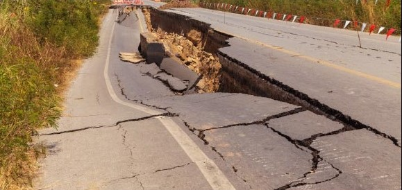
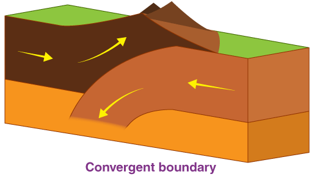
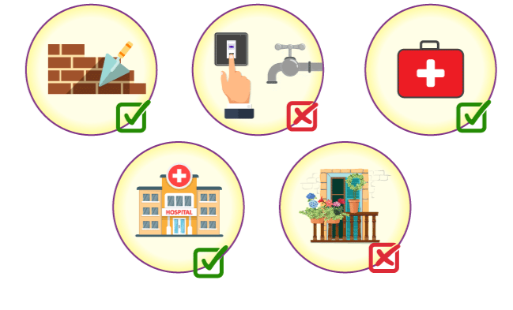
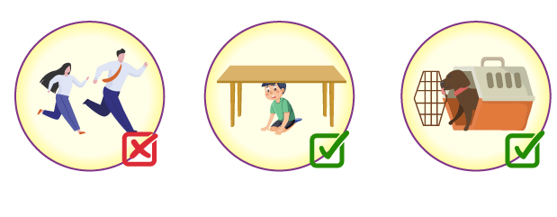
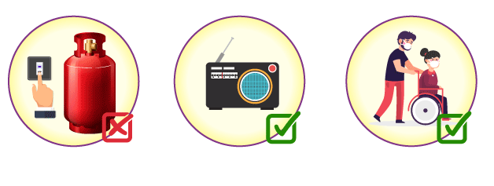
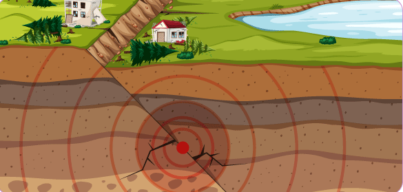

بوومەلەرزەکان کارەساتی سروشتی زۆر وێرانکەرن، کە ساڵانە دەبنە هۆی لەدەستدانی بەرچاوی ژیان و زیانی بەرفراوان بە موڵک و سامان لەسەر ئاستی جیهان. لە وەڵامدا، لیژنەی بەڕێوەبردنی کارەساتەکان ڕێوشوێنی جۆراوجۆری سەلامەتی جێبەجێ کردووە بۆ کەمکردنەوەی کاریگەرییە وێرانکەرەکانی ئەم ڕووداوانە. پەرەپێدانی ستراتیژی کاریگەر و برەودان بە هۆشیاری بەڕێوەبردنی کارەساتەکان گرنگە بۆ کەمکردنەوەی کاریگەری بوومەلەرزەکان و دڵنیابوون لە سەلامەتیمان. ئامانجی ئەم وتارە پێشکەشکردنی تێگەیشتنێکی گشتگیر لە بوومەلەرزەکان، لەوانە هۆکار و کاریگەرییەکانیان، لەگەڵ ڕێنمایی ورد لەسەر چۆنیەتی وەڵامدانەوە لە کاتی و پاش بوومەلەرزەکە.
بوومەلەرزە چییە؟
بوومەلەرزەیەک ئاماژە بە لەرزینی ڕووی زەوی دەکات کە بەهۆی بڵاوبوونەوەی کتوپڕی وزە لە توێکڵی زەویدا دروست دەبێت. ئەم بڵاوکردنەوەی وزەیە شەپۆلی بوومەلەرزەیی دروست دەکات کە بە گشتی بە شەپۆلی S ناسراوە. چڕی و تایبەتمەندییەکانی بوومەلەرزەیەک بەهۆی چالاکییە بوومەلەرزەییەکانەوە دیاری دەکرێت کە لە ناوچەیەکی دیاریکراودا ڕوودەدات.

لە ماوەی بوومەلەرزەیەکدا، وزەی کۆکراوە لەناو توێکڵی زەویدا لەناکاو دەردەچێت، کە دەبێتە هۆی جوڵەی خێرا و جێگۆڕکێی بارستەی بەرد بە درێژایی هێڵە هەڵەکان. ئەم جووڵەیە لەرینەوە بەرهەم دەهێنێت کە بەناو زەویدا بڵاو دەبێتەوە لە شێوەی شەپۆلی بوومەلەرزەیی. شەپۆلەکانی کە پێیان دەگوترێت شەپۆلی بڕین، بە زەویدا تێدەپەڕن بەوەی کە دەبنە هۆی ئەوەی تەنۆلکەکان بە شێوەیەکی ستوونی بجوڵێن بۆ ئاڕاستەی بڵاوبوونەوەی شەپۆل. ئەم شەپۆلانە بەرپرسیارن لە جووڵەی لەرزین لە لایەن یەکەوە لە کاتی بوومەلەرزەدا. لە لایەکی ترەوە، شەپۆلەکانی یان شەپۆلەکانی پەستان وا لە تەنۆلکەکان دەکەن کە بە هەمان ئاراستەی بڵاوبوونەوەی شەپۆل بجوڵێن. شەپۆلەکانی یەکەم شەپۆلن کە لە کاتی بوومەلەرزەدا دۆزراونەتەوە و بەرپرسن لە لێدانی کتوپڕی سەرەتایی. تێگەیشتن لە سروشتی بوومەلەرزەکان و هەڵسوکەوتی شەپۆلەکانی بوومەلەرزە زۆر گرنگە بۆ هەڵسەنگاندنی مەترسییە شیاوەکانی پەیوەست بەو کارەساتە سروشتیانەوە. ئەمە ڕێگە بە زاناکان و پسپۆڕان دەدات بۆ لێکۆڵینەوە لە شێوازەکانی بوومەلەرزە و پەرەپێدانی سیستەمی ئاگادارکردنەوەی زوو و دامەزراندنی کۆدی بیناسازی بۆ پێکهاتەکانی بەرگری بوومەلەرزە و پەروەردەکردنی کۆمەڵگاکان لەسەر ئامادەکاری و پێوانەکانی وەڵامدانەوە.
چی دەبێتە هۆی بوومەلەرزە؟
بوومەلەرزەکان بەهۆی جووڵەی تەکتۆنیکی کتوپڕ لە توێکڵی زەویدا ڕوودەدات. توێکڵی زەوی دابەشکراوە بەسەر بەشە گەورەکاندا کە پێی دەوترێت پلێتی تەکتۆنیک، کە لەسەر چینە نیمچە شلەکە دەسوڕێنەوە کە بە ئەسیسنۆسفێر ناسراوە. ئەم قاپانە بە بەردەوامی لە جووڵەدان، هەرچەندە زۆر بە هێواشی. کاتێک دوو تەکتۆنیک پلێت کارلێک دەکەن، جۆرە جیاوازەکانی سنوور دەتوانن پێکبهێنن، وەک لێکنزیک و لێکدوور و سنوورەکان بگۆڕن. بەهێزترین و وێرانکەرترین بوومەلەرزە بە شێوەیەکی ئاسایی لە سنوورە نزیکەکان ڕوودەدات، کە تێیدا دوو تەختە بەیەکدا دەکەون یان لە یەکتر تێدەپەڕن. لە سنوورێکی نزیک لەوانەیە تەختەیەکی تەکتۆنیک ناچار بکرێت لە ژێر تەختەیەکی تر لە پرۆسەیەکدا کە پێی دەوترێت ژێردەستە. کاتێک پلێتەکان پێکدادان دەکەن یان لە یەکتر تێدەپەڕن، فشارێکی زۆر و لێکخشاندن دروست دەبێت. لە کۆتاییدا فشارەکە زۆر گەورە دەبێت، دەبێتە هۆی ئەوەی بەردەکان بە درێژایی سنوورەکانی قاپەکە بشکێت و بشکێت. ئەم بڵاوکردنەوەیە لەناکاوەی وزەی خەزنکراو شەپۆلی بوومەلەرزەیی دروست دەکات، کە دەبێتە هۆی بوومەلەرزە.

جگە لە جووڵە تەکتۆنییەکان، چالاکییە جیۆلۆجییەکانی تر دەتوانن ببنە هۆی بوومەلەرزە. چالاکی گڕکانی، بۆ نموونە، دەتوانێت ببێتە هۆی بوومەلەرزە کاتێک ماگما بەرز دەبێتەوە بەناو توێکڵی زەویدا، ئەمەش پەستان دروست دەکات و بەردەکانی دەوروبەری گڕکانەکە تێکدەشکێت. ئەو تێکچوونانەی کە بەهۆی ئەم جووڵانەوە و شکانی ناو توێکڵی زەوییەوە دروست دەبێت، لەرینەوە دروست دەکات کە بە هەموو ئاڕاستەکاندا بڵاودەبێتەوە و زەوی دەهەژێنێت. ئەم لەرینەوانە ئەو شەپۆلە بوومەلەرزەییەن کە بە زەویدا تێدەپەڕن و لەلایەن زەویناسییەوە دەدۆزرێنەوە. گرنگە تێبینی ئەوە بکەین کە دروستبوونی فشار و بڵاوکردنەوەی وزە لە شێوەی شەپۆلی شۆکدا میکانیزمی بنچینەیی پشت بوومەلەرزەکانن. قەبارە یان بەهێزی بوومەلەرزەیەک بە بڕی ئەو وزەیە دیاری دەکرێت کە لە کاتی ئەم پرۆسەیەدا دەردەچێت.
قووڵتر لە هۆکارەکانی بوومەلەرزە
ئێمە ڤیدیۆیەکی سەرنجڕاکێشتان پێشکەش دەکەین کە میکانیزمە سەرنجڕاکێشەکانی پشت چالاکییە بوومەلەرزەییەکان دەدۆزێتەوە. بە سەیرکردنی ئەم ڤیدیۆیە، تێگەیشتنێکی قووڵتر دەست دەکەوێت لەوەی چۆن بوومەلەرزەکان دروست دەبن و هۆکارەکانی ڕووداوەکە.
لە کاتی بوومەلەرزەدا چی بکەین؟
کاتێک دێتە سەر بوومەلەرزەکان، ئامادەکاری دەتوانێت هەموو جیاوازییەک دروست بکات. ئەمەی خوارەوە چەند هەنگاوێکی گرنگە کە پێویستە پێش ڕووداوەکە ئەنجام بدرێت:
پێش بوومەلەرزەکە

لە کاتی بوومەلەرزەکەدا
دوای بوومەلەرزەکە
کاریگەرییەکانی بوومەلەرزە چییە؟
بوومەلەرزەکان دەتوانن مەودایەکی فراوان کاریگەرییان هەبێت، کە بە توندی دەگۆڕێت بەپێی هۆکارەکانی وەک قەبارەی بوومەلەرزەکە، قووڵایی ناوەندی بوومەلەرزەکە و جیۆلۆجی ناوخۆیی. ئەمەی خوارەوە هەندێک لە کاریگەرییە سەرەکییەکانی بوومەلەرزەکەیە: